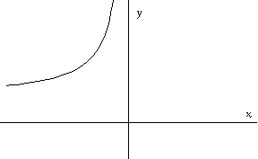

Common Graphs to Memorize
There are certain descriptions which are often used when we talk about graphs.
Descriptions of Graphs:
| "The graph is positive" | means that the y-values of the graph are positive. |
| "The graph is negative" | means that the y-values of the graph are negative. |
| "The graph is increasing" | means that as we move from left to right the y-values on the graph climb. |
| "The graph is decreasing" | means that as we move from left to right the y-values on the graph drop. |
ys are increasing (the graph climbs from left to right)
ys are decreasing (the graph drops from left to right)
ys are increasing (the graph climbs from left to right)
ys are decreasing (the graph drops from left to right)
Essential Information to Memorize About Graphs
For each of the graphs below, you should memorize each of the following pieces of information, or should be familiar enough with the graph that you can determine each from your knowledge of the graph.
- Domain
- Range
- General Shape
- Intercepts and Key values
- Asymptotes
Common Graphs to Memorize


Practice
For practice, go back through the graphs above. We're just memorizing what the different functions look like, so you want to be able to automatically associate the graph with the corresponding function and vice-versa. To test yourself on which function is associated with each graph, scroll down through the graphs being careful to leave the function off the bottom of your browser window. You can scroll upwards to test the reverse association.
Return to Main
Be Careful not to confuse "the graph is negative" with "the x-values are of the graph are negative"
Here the x-values are negative, but the graph is positive.